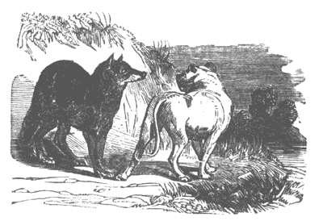

The dog and the wolf
A wolf there was, whose scanty fare Had made his person lean and spare; A dog there was, so amply fed, His sides were plump and sleek; 'tis said The wolf once met this prosp'rous cur, And thus began: "Your servant, sir; I'm pleased to see you look so well, Though how it is I cannot tell; I have not broke my fast to-day; Nor have I, I'm concern'd to say, One bone in store or expectation, And that I call a great vexation." "Indeed it is," the dog replied: "I know no ill so great beside; But if you do not like to be So poorly fed, come live with me." "Agreed," rejoined the wolf, "I'll go: But pray, what work am I to do?" "Oh, guard the house, and do not fail To bark at thieves, and wag your tail." So off they jogg'd, and soon arrived At where the friendly mastiff lived. "Well," said the wolf, "I can't deny You have a better house than I." "Not so," the other then replied, "If you with me will hence abide." "Oh," said the wolf, "how kind you are! But what d'ye call that, hanging there? Is it an iron chain, or what?" "Friend," said the dog, "I quite forgot To mention that; sometimes, you see, They hook that little chain to me; But it is only meant to keep Us dogs from walking in our sleep, And should you wear it, you would find, It's nothing that you need to mind." "I'll take your word," the wolf replied. "It's truth by me shall ne'er be tried; I'll have my liberty again, And you your collar and your chain."
MORAL...
Our neighbors sometimes seem to be A vast deal better off than we; Yet seldom 'tis they really are, Since they have troubles too to bear, Which, if the truth were really known, Are quite as grievous as our own.